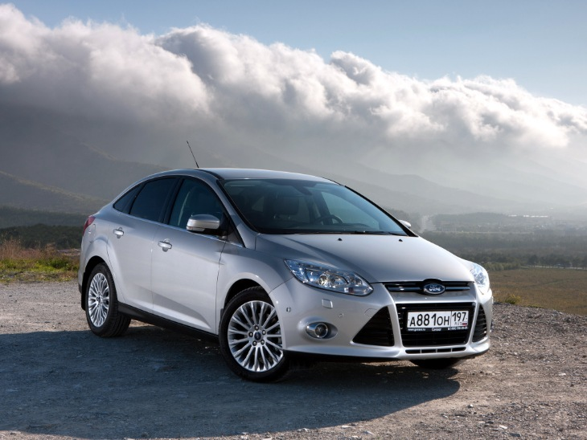

Ford Focus III sedan наследует лучшие качества семейства Focus. Однако, сменив второе поколение, автомобиль был существенно доработан и получил ряд усовершенствований. Форд Фокус 3 по праву считается ярким, мощным и умным автомобилем. Двигатели для Форд Фокус 3 седан представлены линейкой Duratec, позволяющей каждому владельцу выбрать подходящий. Среди них - два объемом 1,6 литра – 105 и 125 лошадиных сил, объемом 2 литра – 150 лошадиных сил. Есть и дизельный - Duratorq, объемом 2 литра – 140 лошадиных сил. Благодаря инновационным технологиям эти моторы при всей своей мощности достаточно экономичны: средний расход - 6 л./100 км. Подвеска отлично справляется со всеми неровностями на дорогах. Ford Focus 3 седан оснащается либо 5-ти или 6-ти ступенчатой коробкой передач, либо роботом PowerShift. В салоне автомобиля не слишком просторно, зато он функционален и технически неплохо оснащен. Автомобиль может быть оснащен рядом электронных систем: предупреждением о наличии автомобилей в слепой зоне, круиз-контролем, системой автоматической парковки.
Ford Focus III sedan наследует лучшие качества семейства Focus. Однако, сменив второе поколение, автомобиль был существенно доработан и получил ряд усовершенствований. Форд Фокус 3 по праву считается ярким, мощным и умным автомобилем. Двигатели для Форд Фокус 3 седан представлены линейкой Duratec, позволяющей каждому владельцу выбрать подходящий. Среди них - два объемом 1,6 литра – 105 и 125 лошадиных сил, объемом 2 литра – 150 лошадиных сил. Есть и дизельный - Duratorq, объемом 2 литра – 140 лошадиных сил. Благодаря инновационным технологиям эти моторы при всей своей мощности достаточно экономичны: средний расход - 6 л./100 км. Подвеска отлично справляется со всеми неровностями на дорогах. Ford Focus 3 седан оснащается либо 5-ти или 6-ти ступенчатой коробкой передач, либо роботом PowerShift. В салоне автомобиля не слишком просторно, зато он функционален и технически неплохо оснащен. Автомобиль может быть оснащен рядом электронных систем: предупреждением о наличии автомобилей в слепой зоне, круиз-контролем, системой автоматической парковки.
Российская моторная гамма седана Focus III состоит исключительно из бензиновых агрегатов экологического класса «Евро-5». Младший двигатель Ti-VCT объемом 1,6 л. выдает 105 л.с. и 150 Нм крутящего момента, тогда как средний движок аналогичного объема развивает уже 125 л.с. и 159 Нм. Оба сочетаются с пятиступенчатой «механикой», либо с 6-скоростной роботизированной трансмиссией PowerShift. Что до топового полуторалитрового агрегата EcoBoost, то его мощность достигает 150 л.с., а пиковый момент — целых 240 Нм. Движок EcoBoost прекрасно относится к 92-му бензину, работает в паре только с шестиступенчатым «роботом» и обеспечивает максимально хорошую динамику. С ним автомобиль ускоряется до 100 км/час всего за 9,3 сек. и развивает предельную скорость в 210 км/час. Паспортный средний расход топлива Focus III — 6-6,7 л. на 100 км, в зависимости от модификации, но реальный «аппетит» может быть выше.